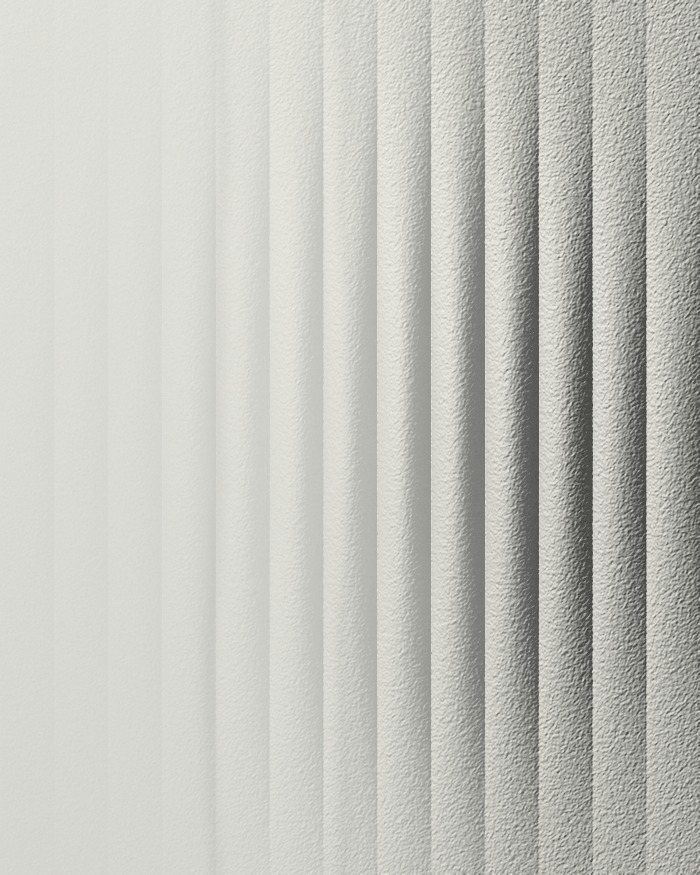
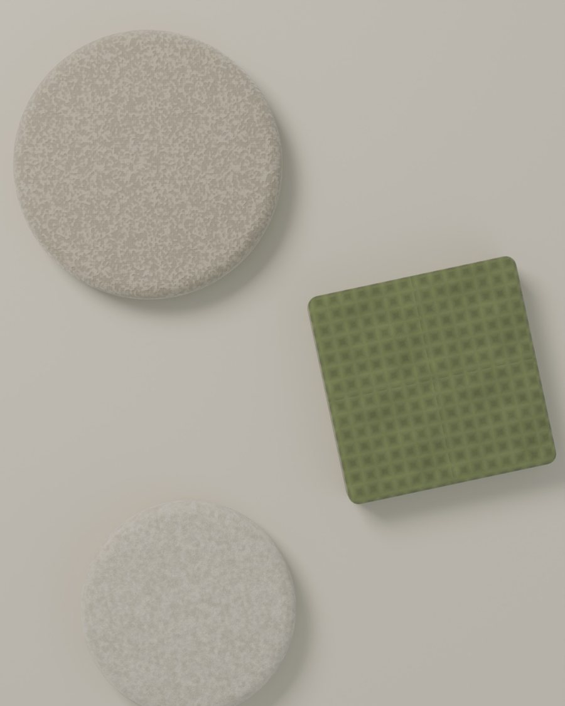
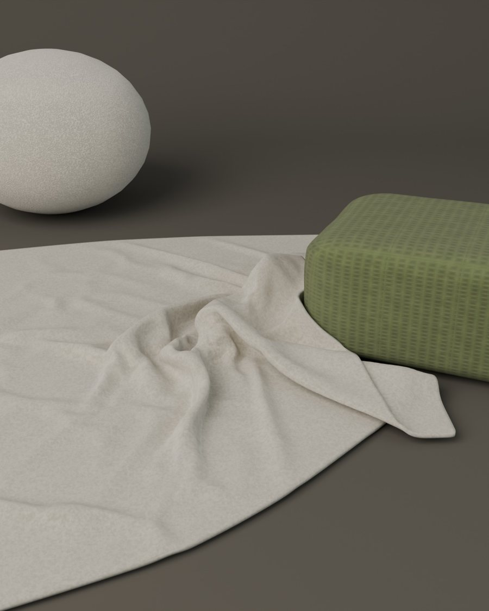
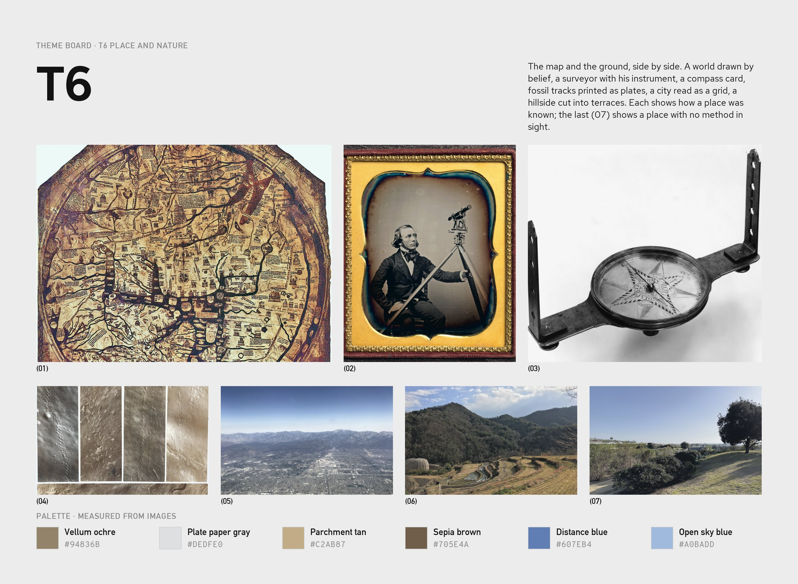

Measures and senses of place
The map shows the method, not the place.



Abstract
How much of what we know about a place belongs to the place, and how much to the instrument we know it through? The Hereford Mappa Mundi, made around 1300, drew the world as its makers believed it to be, in spiritual as well as geographical terms; its order is the order of its method. Science can make the same move in reverse: we observe, find a pattern, then say nature invented the system that allows it, and we call it miraculous because we measured it with our own method. Werner Heisenberg put it plainly: “what we observe is not nature herself, but nature exposed to our method of questioning.” Alfred Korzybski gave the short form, a map is not the territory; Robert Smithson's Nonsites (1968) gave it a material one, rock and a map brought from a site into the gallery, plainly not the site. Today design runs more and more through models: renders, material scans, color values, simulations. They grow finer and are trusted more while fewer people handle the thing they model. A render is taken for a material, a measured value for a color, a forecast for the future. This theme is not against instruments; it is against hiding them. It asks for work that names its method, keeps a piece of the place beside the model, and shows where the method stops.
Impact: Direction
Every color and material a buyer meets has already passed through instruments: a camera, a screen, a spectrophotometer, a render engine. When the instrument is hidden, the product arrives as a small letdown: the color that read warm on screen is cool in the hand; the texture that looked deep in the render is flat in daylight. Saying how a color was known (measured or seen, under which light, from which sample) lets people judge it instead of trusting it. Place works the same way: a palette taken from a coast or a city names the place, the date and the method, and does not claim to be the place. A physical sample travels with every digital one, each admitting what the other cannot show.
Overall mood
The map and the ground, side by side. A world drawn by belief, a surveyor with his instrument, a compass card, fossil tracks printed as plates, a city read as a grid, a hillside cut into terraces. Each shows how a place was known. One image (07) shows a place with no method in sight, on purpose. Muted: parchment, sepia, plate gray, and the blue of distance. Close, documentary, even light.


Test
Does the work show the instrument it was known through, or does it pretend to be the place itself? A photo cannot show intention, so a pass means the method is visible, not that anyone meant it.
Motifs
Three or four things a viewer can recognize, each with the theory sentence it comes from.
01 The map ordered by belief. Image (01). 02 The instrument in the picture. Images (02), (03). From the test: "show the instrument it was known through"; and the translation: "an instrument in the picture." 03 A piece of the place beside the record. Image (04). From the translation: "a sample beside its site"; Smithson's non-sites. Weak, see below. 04 The pattern that is ours. Images (05), (06).
Counter-case, marked here (the builder cannot mark it on the page): image (07), a grassy slope with a tree, offered as the place itself with no map, instrument or method in view. Honest limit: any photo is itself an instrument (a camera). (07) fails the test only on what is visible; this is interpretation.
Weak motifs: 03 has one image, a plate (a photograph of specimens), not a specimen beside its site; the pairing the theory asks for is not shown. 04 is two own photos that carry the idea by reading, not by showing an instrument; (05) comes closest (aircraft window). The translation line "one image where the method visibly fails" is not met: no honest image of a measurement or render failing was found.
Against
the instrument taken for the place: a render taken for a material, a color value taken for a color, a data set taken for a market, a forecast taken for the future. Not against instruments; against hiding them. Phygital reading (Theme Framework): digital method is not the opponent; a digital record with no physical piece beside it is the failure.
Color direction and palette
The theme gives no color direction. Its test is about method, not hue. The palette is measured from the board images, not guessed (k-means in CIE Lab on the downsized, ungraded images (01) to (07), as cropped). Names are descriptive. Not added to the master color book.
| HEX | Name |
|---|---|
#94836B |
Vellum ochre |
#DEDFE0 |
Plate paper gray |
#C2AB87 |
Parchment tan |
#705E4A |
Sepia brown |
#607EB4 |
Distance blue |
#A0BADD |
Open sky blue |
the palette comes from the choice of old documents and two blue-sky photos, not from the theme. A different image set would give a different palette.